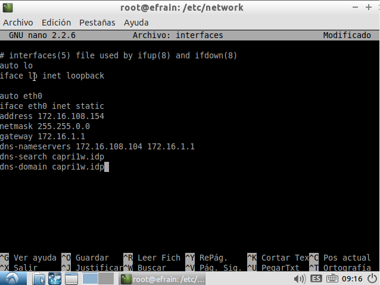
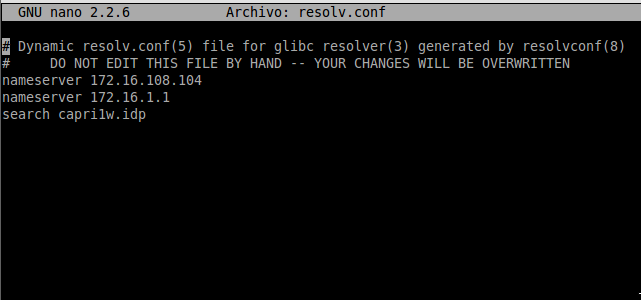
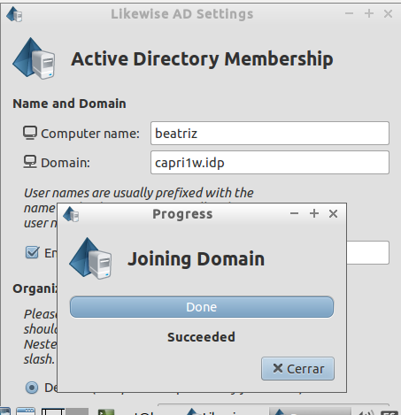
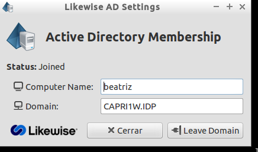
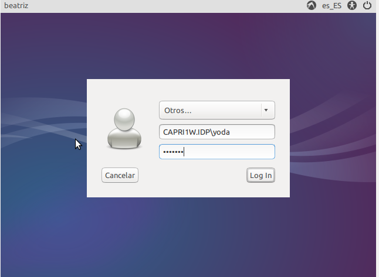
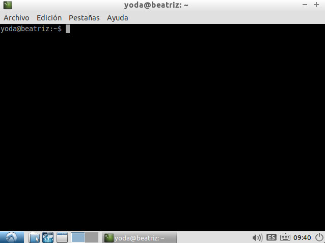
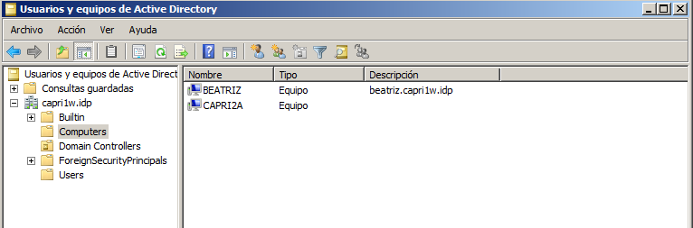

- Módulo: Sistemas Operativos
- Título del trabajo Informe de Clientes de Dominio
- Componentes del grupo: Beatriz de Armas Salvador
- Curso Académico: 2013/2014
- Fecha de entrega: 2 de Junio de 2014
1. Configurar clientes
Tener en cuenta los siguientes aspectos en la configuración del cliente Ubuntu.
- HORA: La fecha/hora del sistema debe sincronizarse con el PDC. Si hiciera falta cambiar la zona horaria podemos usar el comando "dpkg-reconfigure tzdata".
- VIRTUALBOX: GNU/Linux y PDC, deben estar en la misma red, por lo que es aconsejable configurar la red de las máquinas virtuales en modo "puente" las dos (El modo "Red interna" también funcionará bien).
- RED: Recordar que los serviores deben tener la configuración de red estática.
Configuración de red de los clientes:
- Configuración de red estática.

- Configurar los DNS en una máquina Debian/Ubuntu, (/etc/network/interfaces).

2. Unirse al dominio
Para ejecutar el programa, abrimos un terminal y ponemos: domainjoin-gui
Completamos la siguiente información de configuración:
- Computer name: lo dejamos igual.
- Domain: el dominio de nuestro PDC.
Luego nos pedirá usuario y contraseña. Aquí ponemos el administrador del dominio y su contraseña.


3. Comprobación
- Desde el cliente, entramos al sistema con algún usuario del dominio.


